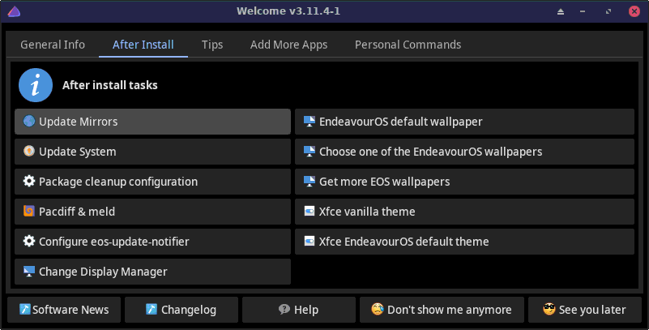

Welcome is an application that helps users by providing
and more.
Welcome has two main uses:

eos-welcome [options]
--enable | -f Enable this Welcome app.
--disable Disable this Welcome app.
--lang=X Use language X on the user interface. Default for X: 'en'
--version Show the version of this app.
--startdelay=X Wait before actually starting this app.
X value syntax is the same as in the 'sleep' command.
--changelog Show the changelog of this package.
To have Welcome app started when you log in, make sure
Hidden=false is set in file
/etc/xdg/autostart/welcome.desktopOn DEs that do not work well with system's Autostart feature, you may also disable the Welcome app from the app itself
--disable optionTo re-enable the app, click the Welcome app icon, or use the terminal command
eos-welcome --enableNote: check also settings in the configuration file
~/.config/EOS-greeter.conf.
User may add own buttons into the Welcome app. The buttons will appear under the Personal Commands tab.
Option --lang=X currently supports a small set of
languages.
The X should consist of two (or more) letters (like 'en'
for English or 'pt_BR' for Brazilian Portuguese).
See the supported languages (the X) e.g. by terminal command
ls -1 /usr/share/endeavouros/scripts/translation-*.bash | \
sed 's|.*/translation-\([a-zA-Z_]*\)\.bash|\1|'If option --lang is not given, the language value is
extracted from the first letters of the environment variable LANG.
If the extracted value is not supported by Welcome, English will be
used.
Welcome app window includes a button Software News
on the lower left corner.
It contains useful and important news for
the user about the EndeavourOS software, e.g. manual interventions or
important code changes.
Make sure you click that button regularly!
To customize the online mode install phase, you can directly
modify file $HOME/user_pkglist.txt and add package names to
that file. Note that only Arch and EndeavourOS packages are supported,
but not AUR packages.
To customize the online mode install phase, you can directly
modify file
/home/liveuser/user_commands.bashand add almost any commands to that file. See more instructions in this file.
Examples of things you can do with the commands in
user_commands.bash:
Here's an example code for user_commands.bash. It will
be called with the bash interpreter, so it must have bash syntax:
#!/bin/bash
pacman -R --noconfirm xed # uninstall packages
pacman -S --noconfirm --needed geany gufw # install packages
systemctl enable ufw # enable a systemd service
user=$(cat /tmp/new_username.txt) # get the new username!
home=/home/$user # get the $HOME folder path
if [ "$user" != "" ] ; then
cat <<EOF >> $home/.bashrc # add more configuration to your ~/.bashrc
alias pacdiff=eos-pacdiff
alias df='df -hT'
EOF
chown $user:$user $home/.bashrc # make sure ~/.bashrc has the right owner
fiYet another tip: download your
user_commands.bash from your website! For example:
$ pwd
/home/liveuser
$ wget -O user_commands.bash https://<your-website>/user_commands.bashExamples of commands that cannot be used here:
eos-welcome --lang=en # use English instead of the local language
eos-welcome --disable # disable Welcome from starting automatically
eos-welcome --enable # re-enable Welcome after disabling it
# Adding packages at install. Close Welcome app first, then commmand:
cat <<EOF >> ~/user_pkglist.txt
gufw
emacs
EOF
eos-welcome &